Polydispersity Distributions
With some models SasView can calculate the average form factor for a population of particles that exhibit size and/or orientational polydispersity. The resultant form factor is normalized by the average particle volume such that
P(q) = scale * <F*F> / V + bkg
where F is the scattering amplitude and the <> denote an average over the size distribution.
Users should note that this computation is very intensive. Applying polydispersion to multiple parameters at the same time, or increasing the number of Npts values in the fit, will require patience! However, the calculations are generally more robust with more data points or more angles.
SasView uses the term PD for a size distribution (and not to be confused with a molecular weight distributions in polymer science) and the term Sigma for an angular distribution.
The following five distribution functions are provided:
- Rectangular Distribution
- Gaussian Distribution
- Lognormal Distribution
- Schulz Distribution
- Array Distribution
These are all implemented in SasView as number-average distributions.
Rectangular Distribution
The Rectangular Distribution is defined as
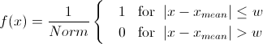where xmean is the mean of the distribution, w is the half-width, and Norm is a normalization factor which is determined during the numerical calculation.
Note that the standard deviation and the half width w are different!
The standard deviation is
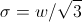whilst the polydispersity is
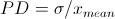
Gaussian Distribution
The Gaussian Distribution is defined as
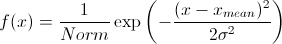where xmean is the mean of the distribution and Norm is a normalization factor which is determined during the numerical calculation.
The polydispersity is
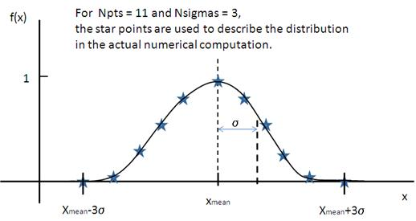Lognormal Distribution
The Lognormal Distribution is defined as
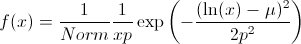where μ=ln(xmed), xmed is the median value of the distribution, and Norm is a normalization factor which will be determined during the numerical calculation.
The median value for the distribution will be the value given for the respective size parameter in the FitPage, for example, radius = 60.
The polydispersity is given by σ
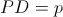For the angular distribution
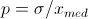The mean value is given by xmean=exp(μ+p2/2). The peak value is given by xpeak=exp(μ-p2).
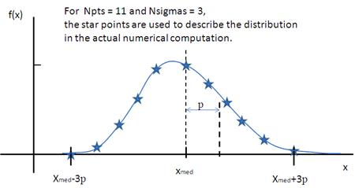This distribution function spreads more, and the peak shifts to the left, as p increases, requiring higher values of Nsigmas and Npts.
Schulz Distribution
The Schulz distribution is defined as
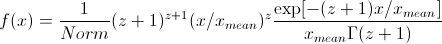where xmean is the mean of the distribution and Norm is a normalization factor which is determined during the numerical calculation, and z is a measure of the width of the distribution such that
z = (1-p2) / p2
The polydispersity is
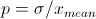Note that larger values of PD might need larger values of Npts and Nsigmas. For example, at PD=0.7 and radius=60 Å, Npts>=160 and Nsigmas>=15 at least.

For further information on the Schulz distribution see: M Kotlarchyk & S-H Chen, J Chem Phys, (1983), 79, 2461.
Array Distribution
This user-definable distribution should be given as as a simple ASCII text file where the array is defined by two columns of numbers: x and f(x). The f(x) will be normalized by SasView during the computation.
Example of what an array distribution file should look like:
| 30 | 0.1 |
| 32 | 0.3 |
| 35 | 0.4 |
| 36 | 0.5 |
| 37 | 0.6 |
| 39 | 0.7 |
| 41 | 0.9 |
SasView only uses these array values during the computation, therefore any mean value of the parameter represented by x present in the FitPage will be ignored.
Note about DLS polydispersity
Many commercial Dynamic Light Scattering (DLS) instruments produce a size polydispersity parameter, sometimes even given the symbol p! This parameter is defined as the relative standard deviation coefficient of variation of the size distribution and is NOT the same as the polydispersity parameters in the Lognormal and Schulz distributions above (though they all related) except when the DLS polydispersity parameter is <0.13.
For more information see: S King, C Washington & R Heenan, Phys Chem Chem Phys, (2005), 7, 143
Note
This help document was last changed by Steve King, 01May2015